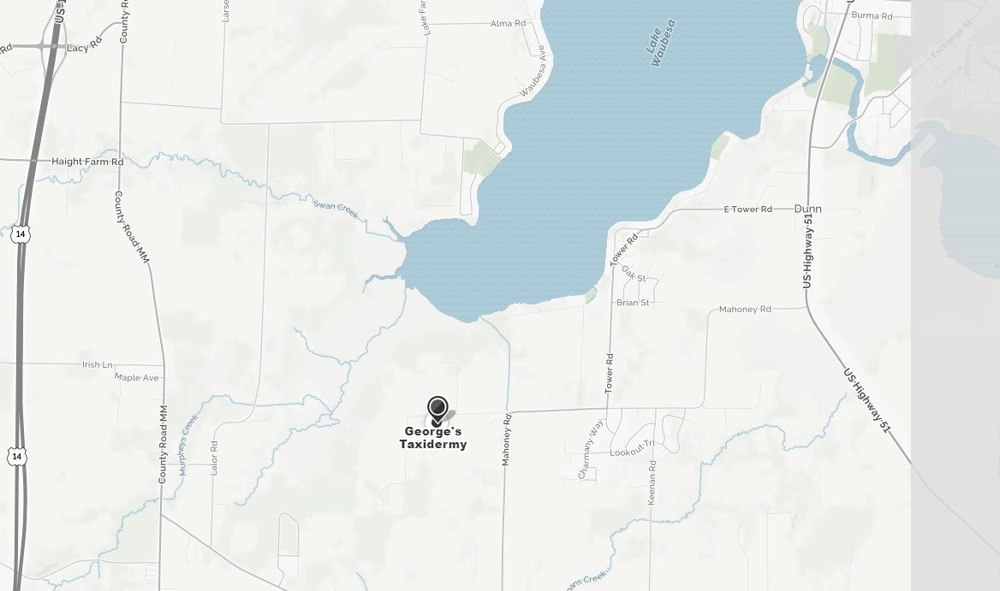

Hello, my name is George Kirch and I have been doing taxidermy since 1996. I incorporate great detail into my work. I am locally owned and an operated full-time taxidermist. I learned taxidermy throught the Dan Chase School of Taxidermy. I am an avid hunter and fisherman that takes great pride in any thing that I do. I use my artistic skill to make every mount look professional and last a life time. I do all the work myself and treat it as if it were my own. I have a show room with many different types of mounts for you to come and see.
I use the lastest techniques to ensure that you are happy with the work that is done. I complete the task in a timely manner. I am a federally and state licensed taxidermist. This is my passion and I am happy to work with you in what ever you are looking for. Please feel free to contact me with any questions.
My address is: 4433 Stace Rd. McFarland, WI 53558. You will find a map below. My phone number is (608) 838-6651 if you have any questions, please feel free to come an see my showroom.
